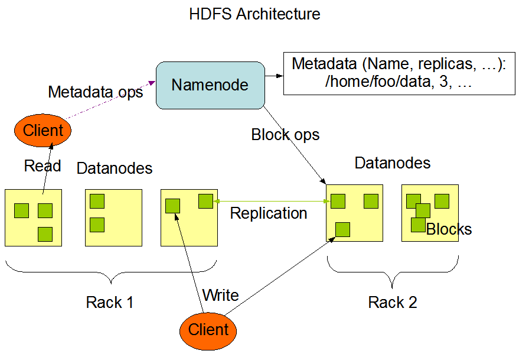
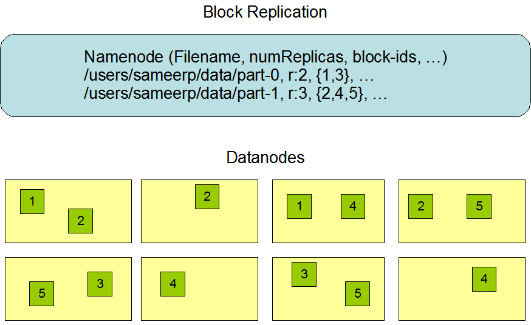
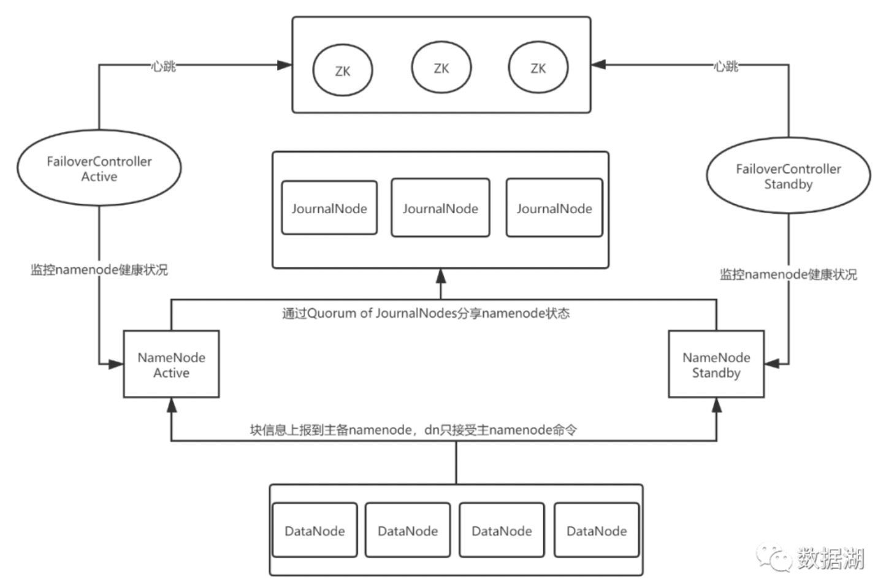
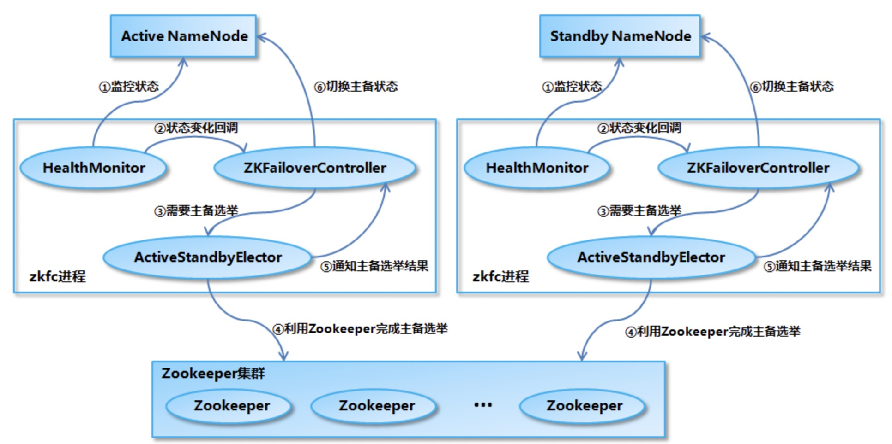
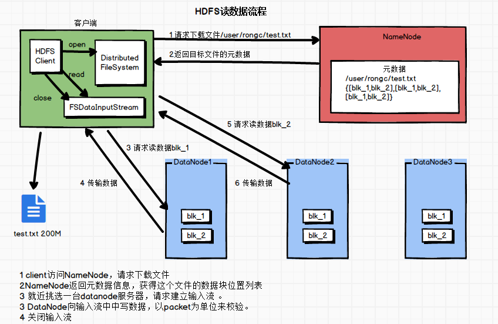
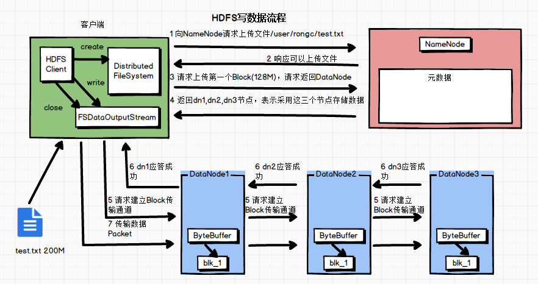

HDFS
https://hadoop.apache.org
A distributed file system that provides high-throughput access to application data.
Key characteristics:
- Optimized for large files, write-once/read-many access patterns, with append-only modifications
- Multiple replicas
- Streaming access rather than low-latency access
1. Concepts
Metadata, File-Block, Rack, Replica, Reads, and Writes

File-Block、Replication

QJM Deployment
NameNode、DataNode、ZKFC、JournalNode 
HA
ZooKeeper Nodes
/hadoop-ha/${dfs.nameservices}/ActiveBreadCrumb: persistent node/hadoop-ha/${dfs.nameservices}/ActiveStandbyElectorLock: ephemeral node
Code:
org.apache.hadoop.hdfs.tools.DFSZKFailoverController

2. Common Commands
hdfs dfs - ls /
hdfs dfs - du - h /
hdfs dfsadmin - report
hdfs haadmin - getAllServiceState
hdfs fsck /tmp/36c8b0727c814dc2ae5d520a45fadeb0.51c9f1f1e3652991ed3071c6c0bb0264 - files - blocks - locations - racks
hdfs dfs - setrep 2 /user/hive/warehouse/temp.db/test_ext_o/000000_0
hdfs balancer - threshold 10
hadoop distcp hdfs://master1:8020/foo/a hdfs://master1:8020/foo/b hdfs://master2:8020/bar/foo
3. Read/Write Flow
Read

Write

4. NameNode-Related Topics
Files
Full image plus incremental logs
fsimage、edit log
Memory Estimation
Total = 198 ∗ num(Directory + Files) + 176 ∗ num(blocks) + 2% ∗ size(JVM Memory Size)
5. DataNode-Related Topics
Placement Policy
Selection policy:
- 1. Current rack, relative to the HDFS client:
chooseLocalNode - 2. Remote rack, relative to the HDFS client:
chooseRemoteRack - 3. Another rack
- 4. Fully random:
chooseRandom
Code:
org.apache.hadoop.hdfs.DFSOutputStream$DataStreamer.findNewDatanode
Replica Checks
BlockManager starts a ReplicationMonitor thread. ReplicationMonitor periodically checks which blocks are missing replicas and notifies the source DataNode about blocks that need replication. After receiving the information, the DataNode continuously replicates blocks, with a default batch size of two blocks at a time.
Code:
org.apache.hadoop.hdfs.server.blockmanagement.BlockManager
Related configuration:
dfs.replication
dfs.namenode.replication.interval
dfs.namenode.replication.work.multiplier.per.iteration
dfs.namenode.replication.max-streams
6. SafeMode
SafeMode is a special NameNode state. In this state, the file system accepts read requests only and rejects changes such as uploads, deletes, and modifications.
When the active NameNode starts, HDFS first enters SafeMode. As DataNodes start, they send heartbeats to the NameNode and report the status of available blocks. Once the overall system meets the safety threshold, HDFS automatically leaves SafeMode.
Safety threshold: the missing-block ratio is below 0.1%.
dfs.namenode.safemode.threshold-pct=0.999
Command to leave SafeMode:
hdfs dfsadmin - safemode leave